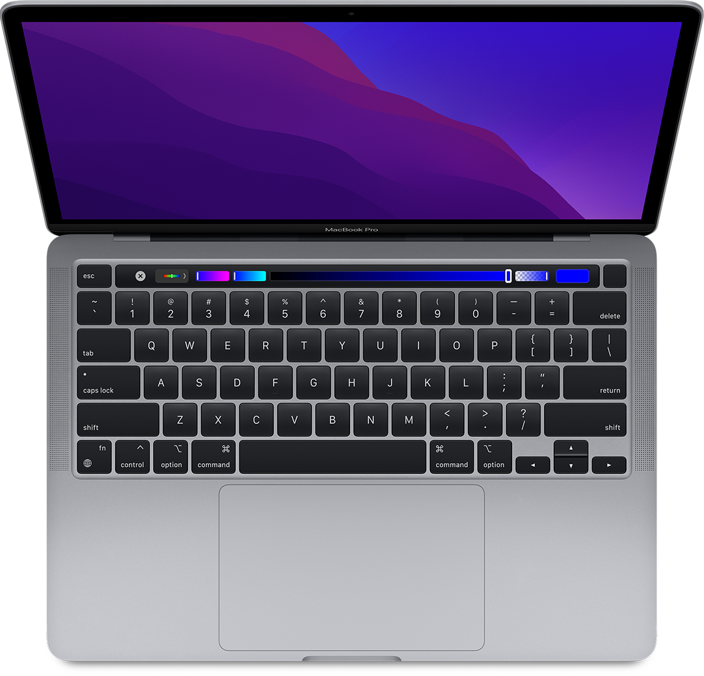
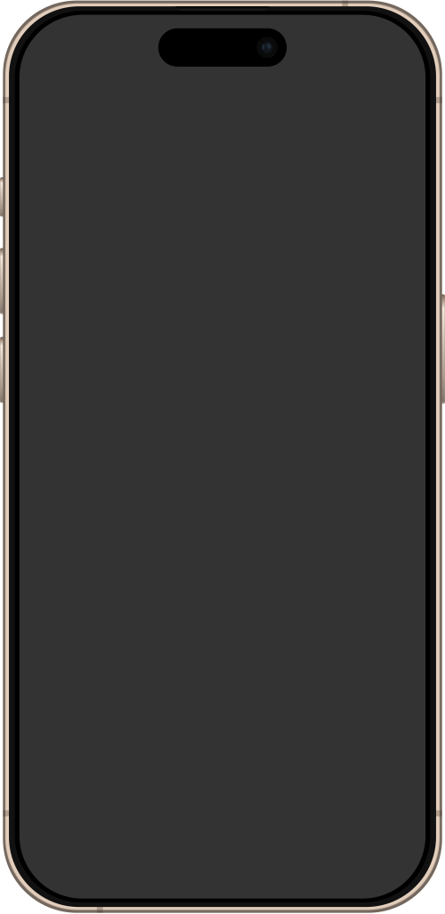
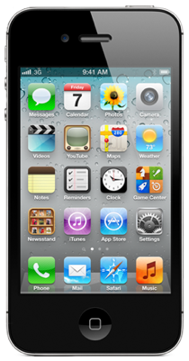
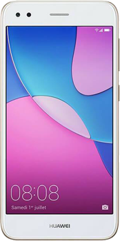
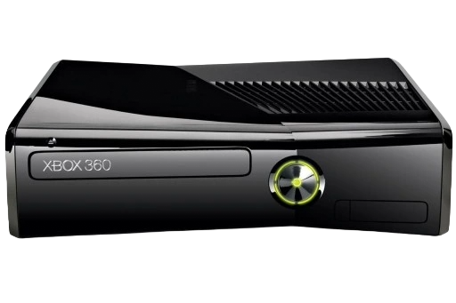

Mój sprzęt
Jest to 13-calowy MacBook z końcówki 2020 roku to mój codzienny, niezawodny partner do pracy i tworzenia. Wyposażony w przełomowy czip Apple M1, oferuje znakomitą wydajność i energooszczędność – idealnie sprawdza się zarówno przy prostych zadaniach, jak i przy bardziej wymagających projektach graficznych, programowaniu czy edycji wideo.
Jest to moje główne narzędzie mobilne – łączy w sobie topową wydajność, świetny aparat i niezawodność, na której mogę polegać każdego dnia. Dzięki nowemu czipowi A18 Pro i zaawansowanym funkcjom fotograficznym, świetnie sprawdza się zarówno w pracy, jak i w codziennym użytkowaniu.
iPhone 4S to mój sprzęt-retro, który służy głównie do eksperymentów z jailbreakiem i eksplorowania starego, ale wciąż fascynującego świata Cydii. Mimo wieku, ten kompaktowy i elegancki smartfon nadal działa sprawnie pod starszymi wersjami iOS i świetnie nadaje się do eksperymentowania ze starym IOS'em.
Miał być telefonem do testów i rootowania, a okazał się totalnym rozczarowaniem. Zablokowany bootloader, brak wsparcia od Huawei i żadnych realnych sposobów na roota. Do modyfikacji się nie nadaje – jedyne, do czego służy, to hotspot albo awaryjny telefon.
Xbox 360 Slim to moja konsola do gier, która dostarcza mi wielu godzin rozrywki. Mimo że nie jest już najnowszym modelem, wciąż ma wiele do zaoferowania, zwłaszcza w po wykonanej przeróbce RGH, jest to sprzęt, który z pewnością zasługuje na uwagę.
